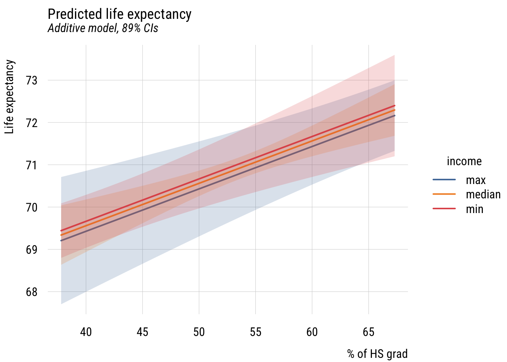
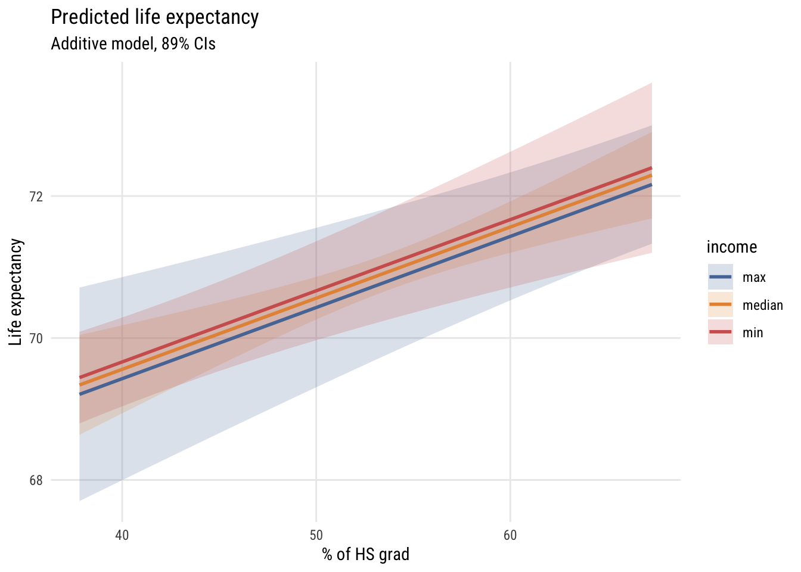
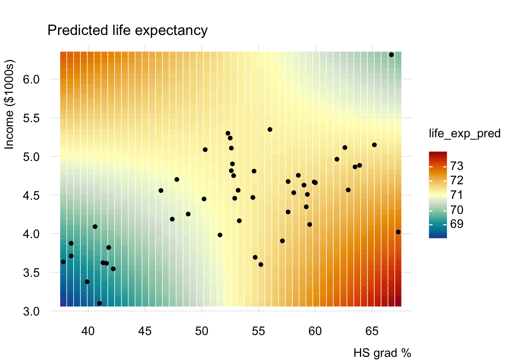
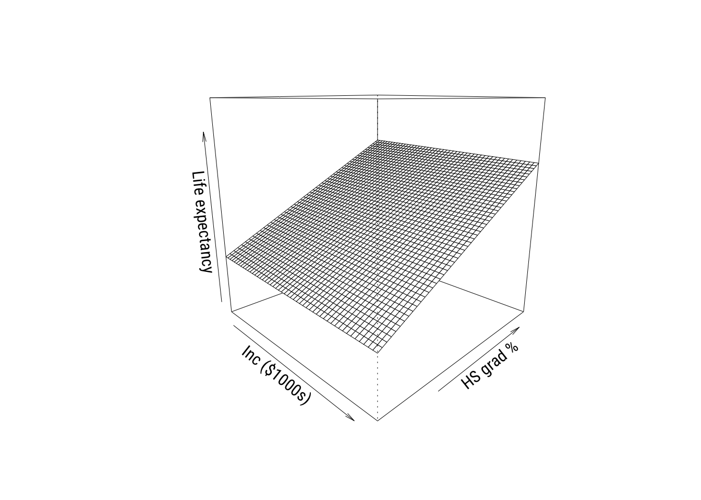
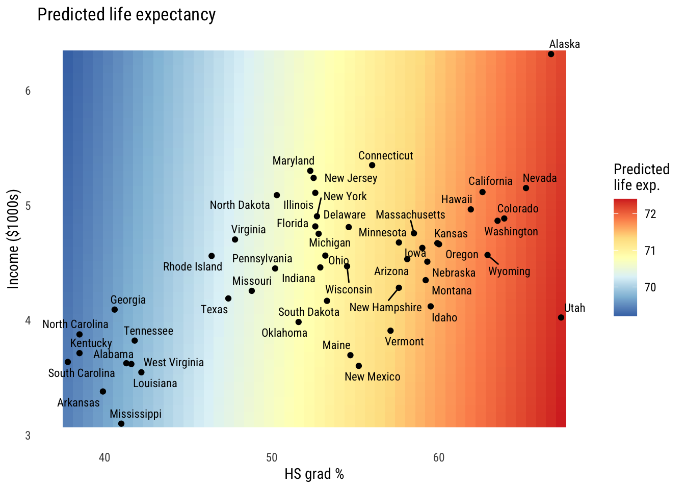
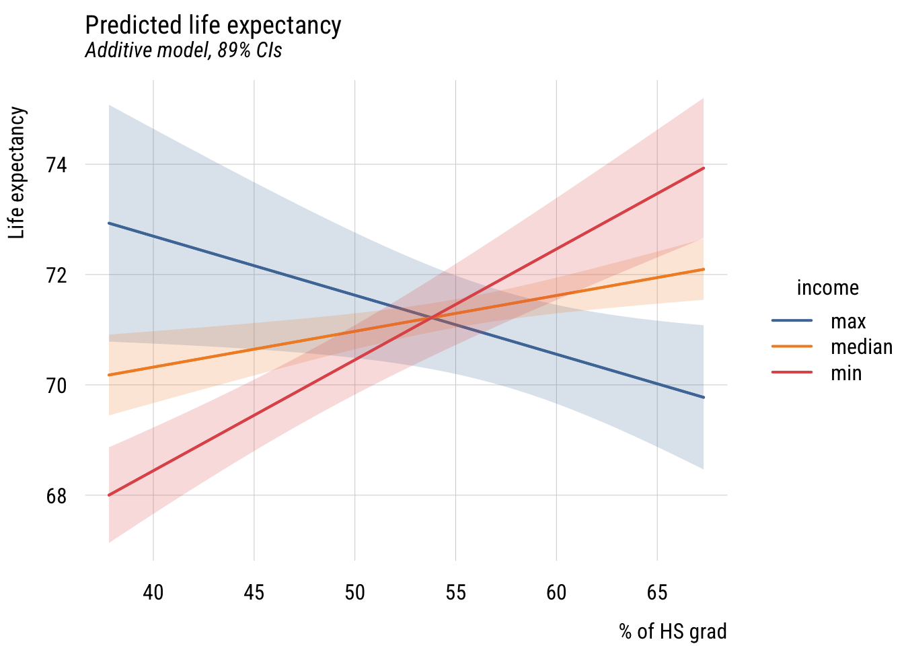
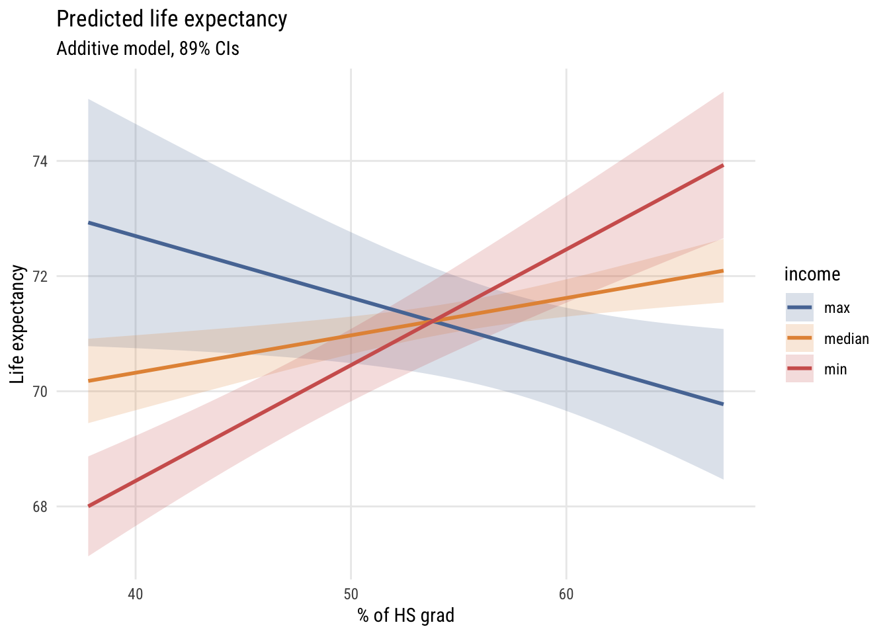
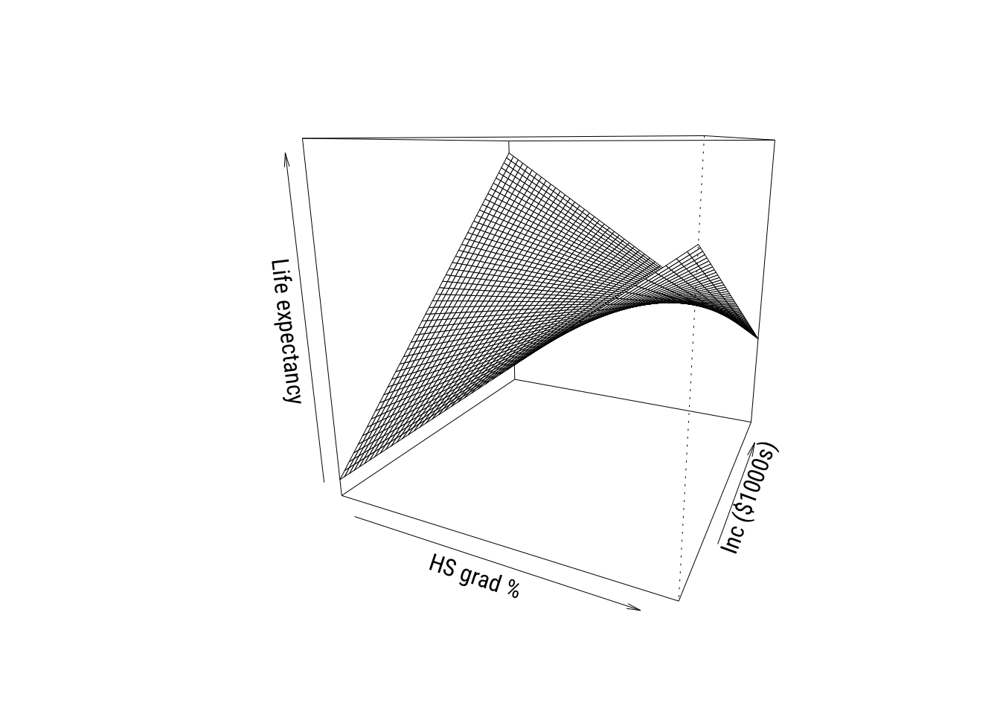
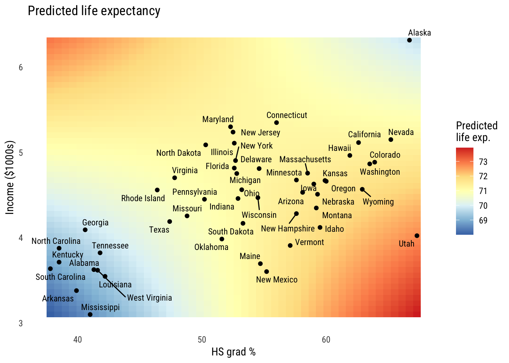

pacman::p_load(dplyr,
tidyr,
broom,
stringr,
modelsummary,
tinyplot,
tinytable, # for additional tabling
ggplot2) # for heatmap and ggplot2 tabsChapter 8
Goals
Set up
As usual, we’ll set packages and our theme.
tinytheme("ipsum",
family = "Roboto Condensed",
palette.qualitative = "Tableau 10",
palette.sequential = "agSunset")# Match tinyplot ipsum style
theme_set(
theme_minimal(base_family = "Roboto Condensed") +
theme(panel.grid.minor = element_blank())
)
# Match Tableau 10 palette used by tinytheme (hex codes from ggthemes)
tableau10 <- c("#5778a4", "#e49444", "#d1615d", "#85b6b2", "#6a9f58",
"#e7ca60", "#a87c9f", "#f1a2a9", "#967662", "#b8b0ac")
options(
ggplot2.discrete.colour = \() scale_color_manual(values = tableau10),
ggplot2.discrete.fill = \() scale_fill_manual(values = tableau10)
)Get the same 50 states data we’ve been using. We’re going to use a new variable, income, in addition to the ones we’ve been using so far. We will convert it into inc1000, or the per capita income in thousands of (1974) USD.
state.x77_with_names <- as_tibble(state.x77,
rownames = "state")
states <- bind_cols(state.x77_with_names,
region = state.division) |> # both are in base R
janitor::clean_names() |> # lower case and underscore
mutate(south = as.integer( # make a south dummy
str_detect(as.character(region),
"South"))) |>
mutate(inc1000 = income/1000) # income variableSimple and additive models
Let’s start with an additive model of life_exp as a function of hs_grad and inc1000:
\[\text{LIFEEXP}_i = \beta_0 + \beta_1(\text{HSGRAD}_i) + \beta_2(\text{INCOME}_i) + \varepsilon_i \]
Or we could write it as:
\[\begin{align} \text{LIFEEXP}_i &= \mathcal{N}(\mu_i, \sigma) \\ \mu_i &= \beta_0 + \beta_1(\text{HSGRAD}_i) + \beta_2(\text{INCOME}_i) \end{align}\]
No matter how we write it, we estimate it like this.
m1 <- lm(life_exp ~ hs_grad + inc1000,
data = states)Here are the results.
Show code
msummary(list("M1" = m1),
fmt = 3,
estimate = "{estimate} ({std.error})",
statistic = NULL,
gof_map = c("nobs", "F", "r.squared"))| M1 | |
|---|---|
| (Intercept) | 65.881 (1.235) |
| hs_grad | 0.100 (0.025) |
| inc1000 | -0.073 (0.330) |
| Num.Obs. | 50 |
| F | 12.088 |
| R2 | 0.340 |
Interpret this table. Think about confidence intervals among other things.
Now let’s look at some predictions for \(M_1\). Let’s look at a few graphs.
Regression lines at representative values*
Let’s look at how to represent this. We’ll set up a grid for the plot, do some predictions, then plot them. I’m going to fold this up but it’s worth looking at because this is a pretty common plotting workflow.
Data prep
# three values of income
myincs <- quantile(states$inc1000,
c(0, .5, 1))
# this will be the x-axis
myhs <- seq(min(states$hs_grad),
max(states$hs_grad),
length = 100)
# combine the values
xgrid <- expand_grid(inc1000 = myincs,
hs_grad = myhs)
# get predictions and confidence bounds
yhat <- predict(m1,
newdata = xgrid,
interval = "confidence",
level = .89)
# stick everything together and label the lines
preds <- bind_cols(yhat, xgrid) |>
mutate(income = case_match(inc1000,
min(states$inc1000) ~ "min",
max(states$inc1000) ~ "max",
.default = "median"))Show code
plt(fit ~ hs_grad | income,
data = preds,
type = "l",
ymax = upr,
ymin = lwr,
lw = 2,
main = "Predicted life expectancy",
sub = "Additive model, 89% CIs",
ylab = "Life expectancy",
xlab = "% of HS grad")
plt_add(type = "ribbon")
Show code
ggplot(preds, aes(x = hs_grad, y = fit, color = income, fill = income)) +
geom_ribbon(aes(ymin = lwr, ymax = upr), alpha = 0.2, color = NA) +
geom_line(linewidth = 1) +
labs(
title = "Predicted life expectancy",
subtitle = "Additive model, 89% CIs",
y = "Life expectancy",
x = "% of HS grad",
color = "income",
fill = "income")
So we set the x-axis to hs_grad and the y-axis to predicted life_exp, showing different values of inc1000 using three different lines. Interpret this graph. How does it relate to the table above?
Of course, we could have plotted the same model a different way.
Data prep
# this are the the three values of HS
myhs <- quantile(states$hs_grad,
c(0, .5, 1))
# this is the x-axis
myincs <- seq(min(states$inc1000),
max(states$inc1000),
length = 100)
# combine the values
xgrid <- expand_grid(inc1000 = myincs,
hs_grad = myhs)
# get the predictions
yhat <- predict(m1,
newdata = xgrid,
interval = "confidence",
level = .89)
# stick everything together and label the lines
preds <- bind_cols(yhat, xgrid) |>
mutate(hs_rate = case_match(hs_grad,
min(states$hs_grad) ~ "min",
max(states$hs_grad) ~ "max",
.default = "median"))Show code
plt(fit ~ inc1000 | hs_rate,
data = preds,
type = "l",
ymax = upr,
ymin = lwr,
lw = 2,
main = "Predicted life expectancy",
sub = "Additive model, 89% CIs",
ylab = "Life expectancy",
xlab = "Per capita income ($1000s)",
legend = legend(title = "HS Grad %"))
plt_add(type = "ribbon")
Show code
ggplot(preds, aes(x = inc1000, y = fit, color = hs_rate, fill = hs_rate)) +
geom_ribbon(aes(ymin = lwr, ymax = upr), alpha = 0.2, color = NA) +
geom_line(linewidth = 1) +
labs(
title = "Predicted life expectancy",
subtitle = "Additive model, 89% CIs",
y = "Life expectancy",
x = "Per capita income ($1000s)",
color = "HS Grad %",
fill = "HS Grad %")
How does this differ?
Perspective plots*
We’ve seen this type of plot before but let’s take another look.
Show code
# simplify names
x <- states$hs_grad
y <- states$inc1000
z <- states$life_exp
# set up grid
gx <- seq(min(x), max(x), length = 50)
gy <- seq(min(y), max(y), length = 50)
grid <- expand_grid(hs_grad = gx,
inc1000 = gy)
# get predictions in matrix form
Z <- matrix(predict(m1,
newdata = grid),
nrow = length(gx),
ncol = length(gy))
# padding
zlim <- range(c(z, Z))
pad <- diff(zlim) * 0.05
zlim <- zlim + c(-pad, pad)
# graph
pmat <- persp(
x = gx, y = gy, z = Z,
theta = 45, phi = 15,
zlim = zlim,
ylab = "HS grad %", xlab = "Inc ($1000s)", zlab = "Life expectancy",
ticktype = "simple"
)
These are cool to look at but you don’t see real 3D plots much in the real world in my experience.
Heatmaps*
The final thing we’ll look at is a heatmap. We could hack this together in {tinyplot} but we really should be using {ggplot2} here.
Show code
# get predictions to plot
grid <- expand_grid(
hs_grad = seq(min(states$hs_grad), max(states$hs_grad), length = 50),
inc1000 = seq(min(states$inc1000), max(states$inc1000), length = 50)) |>
mutate(life_exp_pred = predict(m1, newdata = pick(everything())))
# make the graph
ggplot() +
geom_tile(
data = grid,
aes(x = hs_grad,
y = inc1000,
fill = life_exp_pred)) +
geom_point(
data = states,
aes(x = hs_grad, y = inc1000),
color = "black", size = 1.5) +
ggrepel::geom_text_repel(
data = states,
aes(x = hs_grad,
y = inc1000,
label = state,
family = "Roboto Condensed"),
size = 3) +
scale_fill_distiller(
palette = "RdYlBu",
direction = -1,
name = "Predicted\nlife exp.") +
labs(
x = "HS grad %",
y = "Income ($1000s)",
title = "Predicted life expectancy") +
theme_minimal(base_family = "Roboto Condensed") +
theme(panel.grid = element_blank())
You can see the the hs_grad gradient is pretty big and the inc1000 gradient is mild at best.
Interactions between predictors
These models so far have assumed that the effect of hs_grad and inc1000 are additive effects. That is, that the marginal effect of each on the outcome doesn’t depend on the value of the other variable. We can change that!
Estimation and interpretation of the interaction model
Here’s the interaction model:
\[\text{LIFEEXP}_i = \beta_0 + \beta_1(\text{HSGRAD}_i) + \beta_2(\text{INCOME}_i) + \beta_3(\text{HSGRAD}_i)(\text{INCOME}_i) + \varepsilon_i \]
Or we could write it as:
\[\begin{align} \text{LIFEEXP}_i &= \mathcal{N}(\mu_i, \sigma) \\ \mu_i &= \beta_0 + \beta_1(\text{HSGRAD}_i) + \beta_2(\text{INCOME}_i) + \beta_3(\text{HSGRAD}_i)(\text{INCOME}_i) \end{align}\]
Either way, we estimate it as follows:
m2 <- lm(life_exp ~ hs_grad * inc1000, data = states)The hs_grad * inc1000 notation is a shorthand for hs_grad + inc1000 + hs_grad:inc1000, where hs_grad:inc1000 means \((\text{HSGRAD}_i)(\text{INCOME}_i)\).
Here are the results:
Show code
msummary(list("M2" = m2),
fmt = 3,
estimate = "{estimate} ({std.error})",
statistic = NULL,
gof_map = c("nobs", "F", "r.squared"))| M2 | |
|---|---|
| (Intercept) | 44.446 (6.022) |
| hs_grad | 0.498 (0.112) |
| inc1000 | 5.151 (1.473) |
| hs_grad × inc1000 | -0.096 (0.026) |
| Num.Obs. | 50 |
| F | 14.505 |
| R2 | 0.486 |
Visualizing the interactive model*
Now we can construct a grid of predictions to plot as above.
Data prep
# this is going to be the x axis
myhs <- seq(min(states$hs_grad),
max(states$hs_grad),
length = 100)
# three representative values of income so we can plot 3 lines
myincs <- quantile(states$inc1000,
c(0, .5, 1))
# all combinations
xgrid <- expand_grid(inc1000 = myincs,
hs_grad = myhs)
# generate predictions
yhat <- predict(m2,
newdata = xgrid,
interval = "confidence",
level = .89)
# stick everything together and label
preds <- bind_cols(yhat, xgrid) |>
mutate(income = case_match(inc1000,
min(states$inc1000) ~ "min",
max(states$inc1000) ~ "max",
.default = "median"))Show code
plt(fit ~ hs_grad | income,
data = preds,
type = "l",
ymax = upr,
ymin = lwr,
lw = 2,
main = "Predicted life expectancy",
sub = "Additive model, 89% CIs",
ylab = "Life expectancy",
xlab = "% of HS grad")
plt_add(type = "ribbon")
Show code
ggplot(preds, aes(x = hs_grad, y = fit, color = income, fill = income)) +
geom_ribbon(aes(ymin = lwr, ymax = upr), alpha = 0.2, color = NA) +
geom_line(linewidth = 1) +
labs(
title = "Predicted life expectancy",
subtitle = "Additive model, 89% CIs",
y = "Life expectancy",
x = "% of HS grad",
color = "income",
fill = "income")
As you can see, the slope of hs_grad appears to depend very strongly on the value of inc1000!
We can look at it in the other ways we’ve seen so far as well. Such as the perspective plot…
Show code
# simplify names
x <- states$hs_grad
y <- states$inc1000
z <- states$life_exp
# set up grid
gx <- seq(min(x), max(x), length = 50)
gy <- seq(min(y), max(y), length = 50)
grid <- expand_grid(hs_grad = gx,
inc1000 = gy)
# get predictions in matrix form
Z <- matrix(predict(m2,
newdata = grid),
nrow = length(gx),
ncol = length(gy))
# padding
zlim <- range(c(z, Z))
pad <- diff(zlim) * 0.05
zlim <- zlim + c(-pad, pad)
# graph
pmat <- persp(
x = gx, y = gy, z = Z,
theta = 25, phi = 15,
zlim = zlim,
xlab = "HS grad %", ylab = "Inc ($1000s)", zlab = "Life expectancy",
ticktype = "simple"
)
And the heatmap…
Show code
# get predictions to plot
grid <- expand_grid(
hs_grad = seq(min(states$hs_grad), max(states$hs_grad), length = 50),
inc1000 = seq(min(states$inc1000), max(states$inc1000), length = 50)) |>
mutate(life_exp_pred = predict(m2, newdata = pick(everything())))
# make the graph
ggplot() +
geom_tile(
data = grid,
aes(x = hs_grad,
y = inc1000,
fill = life_exp_pred)) +
geom_point(
data = states,
aes(x = hs_grad, y = inc1000),
color = "black", size = 1.5) +
ggrepel::geom_text_repel(
data = states,
aes(x = hs_grad,
y = inc1000,
label = state,
family = "Roboto Condensed"),
size = 3) +
scale_fill_distiller(
palette = "RdYlBu",
direction = -1,
name = "Predicted\nlife exp.") +
labs(
x = "HS grad %",
y = "Income ($1000s)",
title = "Predicted life expectancy") +
theme_minimal(base_family = "Roboto Condensed") +
theme(panel.grid = element_blank())
All three of these ways of visualizing tell the same story of a relationship that’s not fully additive.1
1 Looking at these graphs, the reason the interactions are helping might really be down to Alaska and Utah. We probably won’t talk too much about outliers in this chapter (there’s enough to do already) but I’d look a lot closer in this case.
Model comparisons*
Let’s compare the additive (C or \(M_1\)) and interactive (A or \(M_2\)) models. First let’s look at the \(F\)-test comparison.
anova(m1, m2)Analysis of Variance Table
Model 1: life_exp ~ hs_grad + inc1000
Model 2: life_exp ~ hs_grad * inc1000
Res.Df RSS Df Sum of Sq F Pr(>F)
1 47 58.306
2 46 45.375 1 12.931 13.109 0.0007296 ***
---
Signif. codes: 0 '***' 0.001 '**' 0.01 '*' 0.05 '.' 0.1 ' ' 1This is called an incremental \(F\) test. The null hypothesis is that adding the additional term (here, the interaction) does not improve model fit.
As I discussed in the extra unit on likelihood comparison, we can also use a test based on comparing the likelihoods. This is the likelihood ratio test (LRT). The reason I point this out here is because the LRT can be used for many kinds of models, not just linear regressions.
lmtest::lrtest(m1, m2)Likelihood ratio test
Model 1: life_exp ~ hs_grad + inc1000
Model 2: life_exp ~ hs_grad * inc1000
#Df LogLik Df Chisq Pr(>Chisq)
1 4 -74.789
2 5 -68.520 1 12.537 0.0003989 ***
---
Signif. codes: 0 '***' 0.001 '**' 0.01 '*' 0.05 '.' 0.1 ' ' 1This test gives a smaller p-value because the tail of the \(\chi^2\) distribution is thinner than the tail of the \(F\) distribution with one numerator and 46 denominator degrees of freedom. These get more similar as the sample size goes up.